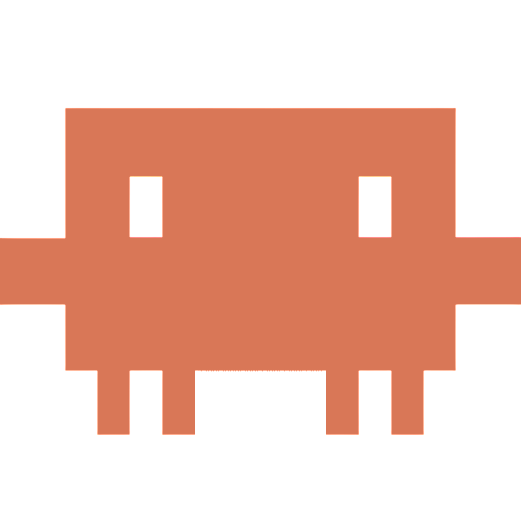

Real terminals, side by side
Every pane is a real terminal. Arrange them in a grid, focus one or build your own layout, and open tabs inside the same pane.
KyvenLab is a Windows workspace that runs Claude Code, Codex, Antigravity, OpenCode and shells side by side, in real terminals. A Pilot splits the work across workers, and you follow each one without switching windows.

Pilot#232 working› I split the task into two parts, server and app, and sent each one to a worker.
PS> npm run build
✓ built in 18.4s
PS>
● Running the server tests
42 of 57 passed…
 Publish buttons#540
in review
Publish buttons#540
in review
› Done. The banner tests passed; waiting for the Pilot to review.

Download page#541 waiting for you? Can I publish the page to the public repository?
Every pane is a real terminal. Arrange them in a grid, focus one or build your own layout, and open tabs inside the same pane.
The Pilot plans, sends each part to a worker in an isolated copy of the project, and reviews what comes back. You see who is working, in review or waiting for you.
Each terminal’s conversations and history are saved. When you reopen the app, everything is back in the same place.
An agent idle for 20 minutes hibernates and resumes the same conversation when you click it. RAM usage is shown in the title bar.
Projects, history and preferences sync across your computers with end-to-end encryption. The account is optional: without it, everything stays on your PC.
Read what the Pilot is doing, answer a question or approve a request from your phone, and get a notification when someone is waiting for you.
KyvenLab finds each tool installed on your PC and opens it with your own account. The usage limits of each one are in a single place.

Click Download for Windows and open the file KyvenLab-setup.exe.
The installer is not code-signed yet, so Windows SmartScreen may warn you. Click More info, then Run anyway.
In the app, open Sync and sign in with the invite you received. This turns on automatic updates.
This is how the notice appears inside KyvenLab.
For Windows 10 and 11, 64-bit. Version .